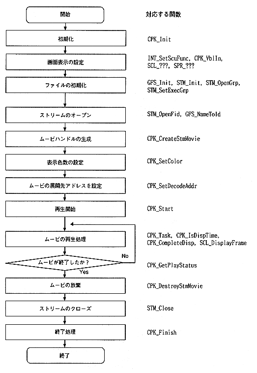

Return to previous page ｜ Return to menu ｜ Go to next page
-
4.2 Movie playback procedure
- (1) Playback procedure
Figure 4.2 shows the procedure for playing movies using the stream system.

Figure 4.2 Movie playback procedure during memory playback
Return to previous page ｜ Return to menu ｜ Go to next page